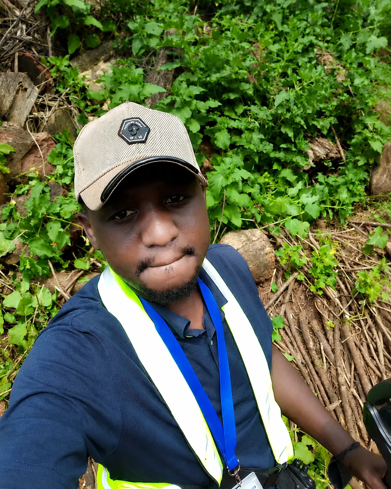

Change monitoring
Track changes in land cover and vegetation and identify areas that need field verification.
Benard Okello
From satellite imagery and field observations to spatial models and databases, I build analyses, maps, and tools that make complex conditions clear and actionable.

Profile
My background spans field surveys, production mapping, and applied research. I use that experience to connect what teams observe on the ground with what they see in satellite imagery and spatial records.
I work across agriculture, infrastructure, and environmental management, with an emphasis on documenting where the data comes from and how the analysis was done.
For teams that need to track changes across a landscape, assess a site, or make field data easier to use.
Track changes in land cover and vegetation and identify areas that need field verification.
Compare sites by terrain, drainage, access, and land constraints, then document what is viable and where further investigation is needed.
Connect field observations to web maps, dashboards, and applications so teams can track progress and share findings.
The methods and software I use to collect, analyse, and publish spatial data, from field surveys to interactive web applications.
Run 2D and 3D spatial analysis, collect field observations, and process photogrammetry and LiDAR data.
Structure spatial data, query and interpret results, and apply quality checks before the data reaches a report or dashboard.
Script repeatable QGIS workflows and build live data pipelines that pull from APIs, validate records, and prepare data for analysis.
Classify land cover and detect change from satellite imagery using object-based image analysis (OBIA) and Random Forest. Use Google Cloud and BigQuery for foundational data engineering tasks.
Build live dashboards, analyze time series, apply regression and classification, and use AI-assisted methods in geospatial analysis.
Build responsive web maps and spatial applications that let users explore layers, inspect features, and work with geospatial data in the browser.
Coordinate project schedules and deliverables, supervise production teams, train staff, and write technical reports and training manuals.
Explain findings clearly, delegate work, plan for contingencies, and diagnose problems as they arise. I bring attention to detail and follow-through when priorities or deadlines change.
Browse client projects, technical demonstrations, and concepts. Each case study explains my contribution and what the work delivered.
How I work
I agree on the accuracy requirements up front and document the checks that support the final deliverable.
Clarify users, outcomes, accuracy requirements, standards, and the operational questions the work must answer.
Collect, structure, document, validate, and integrate spatial and non-spatial data into a dependable foundation.
Apply repeatable spatial methods, scripts, database logic, and quality checks that can be reviewed and reproduced.
Publish maps, reports, dashboards, databases, or web GIS tools in a form that the intended audience can use.
Experience
My roles have progressed from map production and quality control to team supervision and applied geospatial research.
Designing automated QA tools, managing cloud-hosted web GIS workflows, and deploying GeoServer services alongside interactive dashboards.
Supervised production teams, monitored project budgets, and built Python/PyQGIS validation scripts to streamline database quality control.
Coordinated production schedules, oversaw first-level quality control, and managed map production across ArcGIS and AutoCAD workflows.
Terrain editing, digital stereo mapping, LiDAR point-cloud processing, project QA/QC, and technical research.
2D and 3D vector data production, PostgreSQL/PostGIS data integrity, and technical production support.
University of Nairobi · October 2009 — December 2013
Coursework included physical and human geography, environmental studies, cartography, remote sensing, GIS, and spatial analysis.
Workplace recognition
“Benard combines expertise in spatial analysis, remote sensing, geospatial databases, and Python automation with machine learning and deep learning to extract meaningful intelligence from satellite imagery and complex spatial datasets.”
Direct channels
Tell me a bit about your project, the data you're working with, and the problem you need to solve.